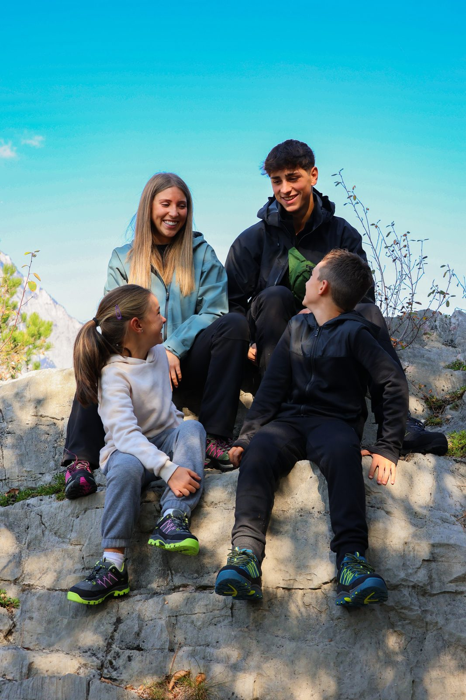
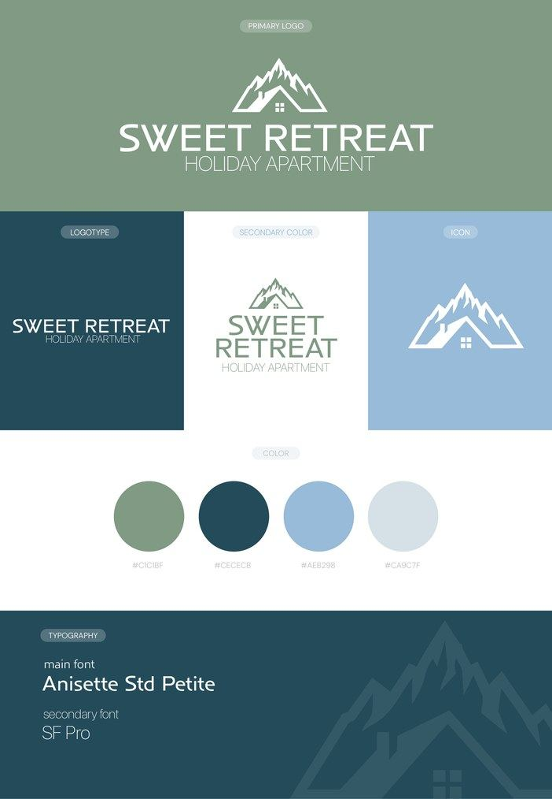
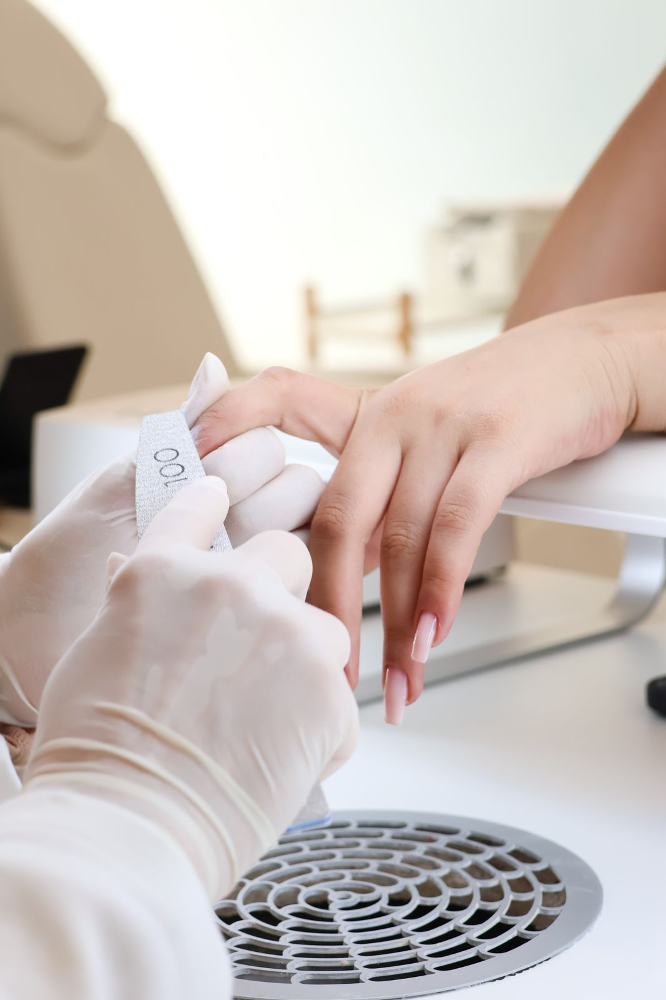
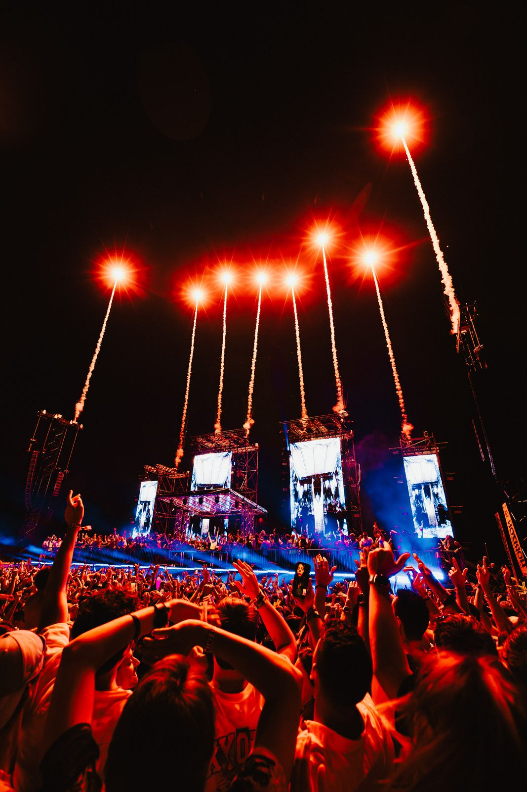
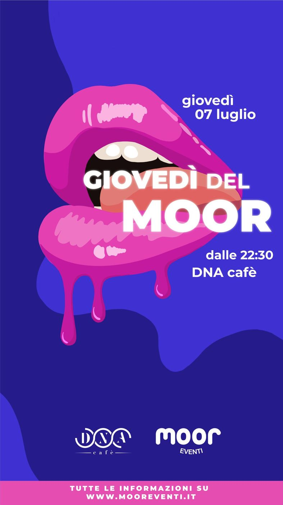
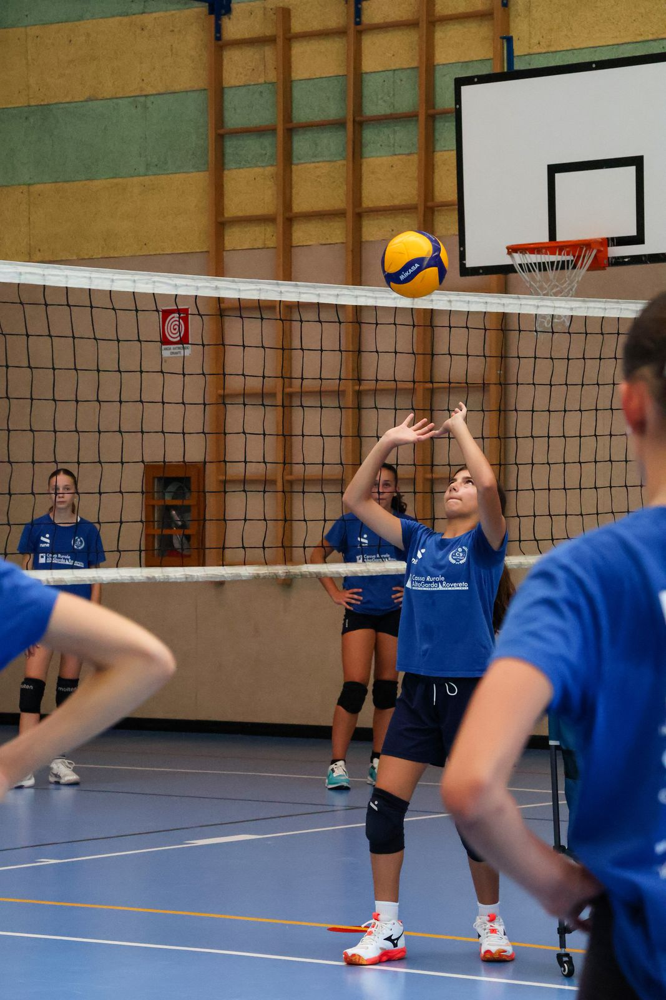
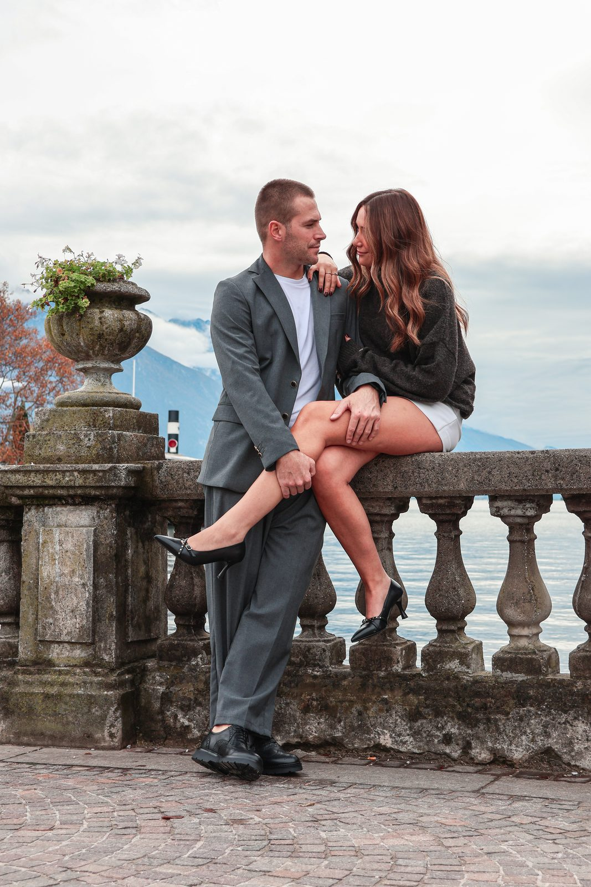
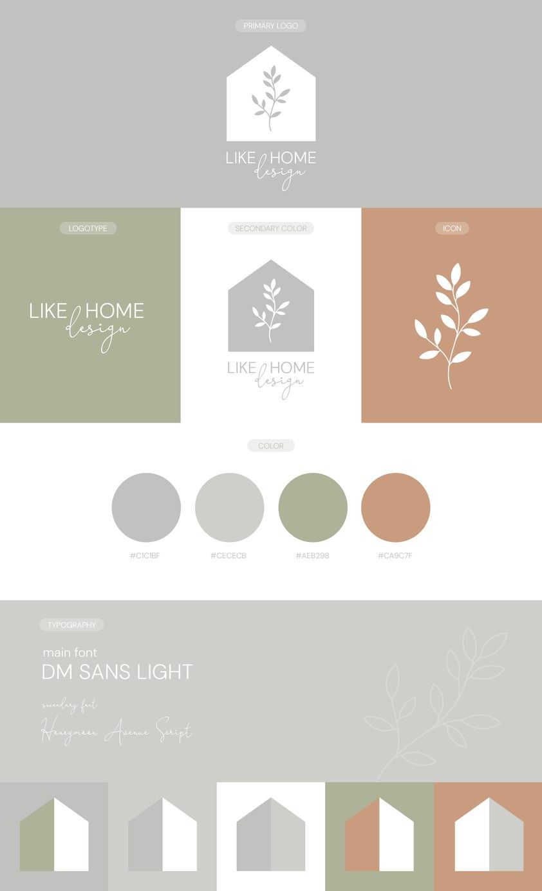
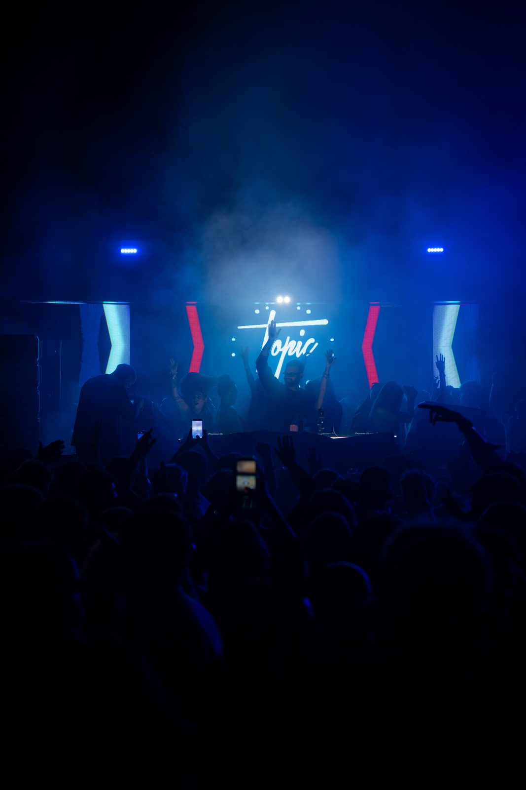
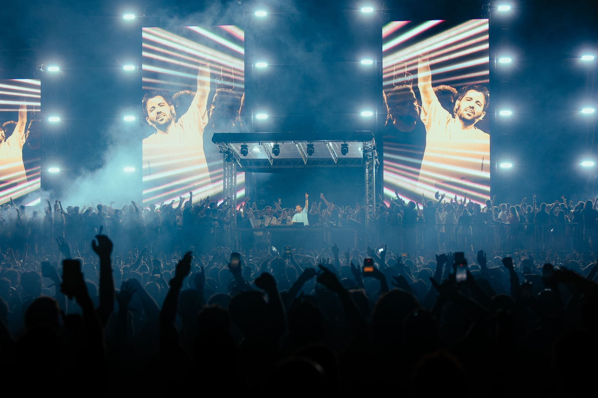

EM Studio — Comunicazione e marketing
 Dolce Riva NightOrganizzazione eventi
Dolce Riva NightOrganizzazione eventi

Calzature DroCatena di negozi di scarpe
Sweet RetreatAppartamenti turistici
Desiree CoronaCentro estetico La LavagnaPizzeria e laboratorio artigianale
La LavagnaPizzeria e laboratorio artigianale
 Garda HostAgenzia affitti turistici
Garda HostAgenzia affitti turistici
 MC House GroupAgenzia immobiliare
MC House GroupAgenzia immobiliare

Horizon Music FestivalMerchandising







(01) — EM STUDIO
Il bello è vedere quello che gli altri non vedono.
EM Studio è uno spazio creativo in continua evoluzione, dove idee, competenze e punti di vista diversi si incontrano. Un team che prende forma attorno a ogni progetto.